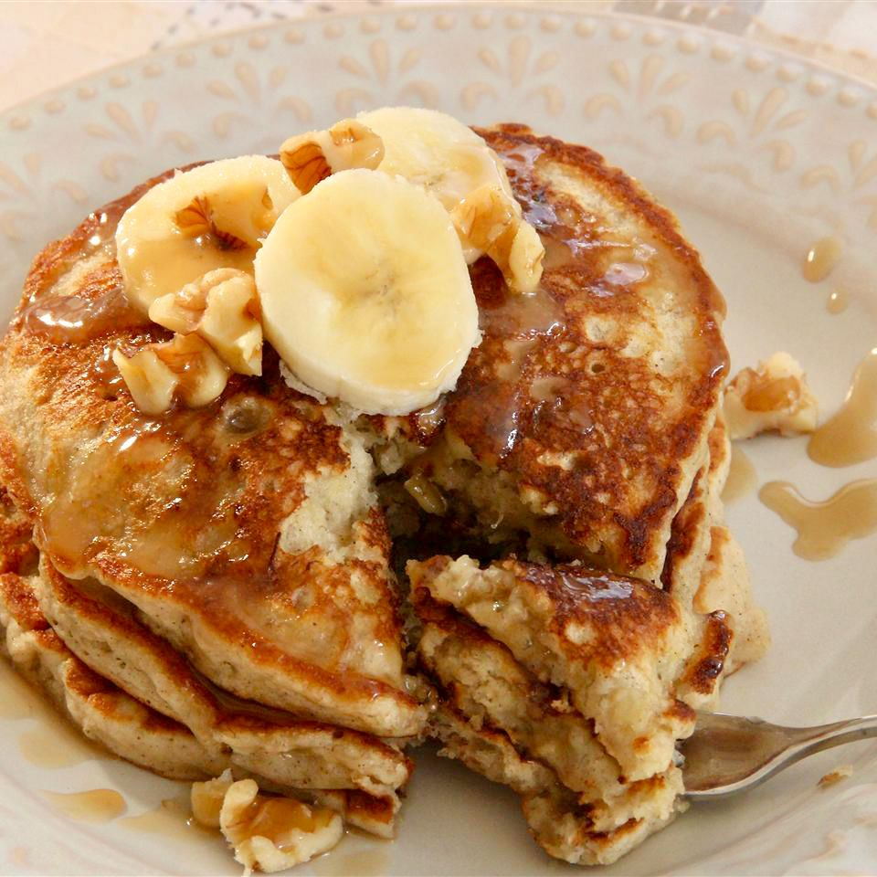

Banana pancakes |
|
|  |
Ingredients |
|
2 medium-to-large ripe banana, 4 large eggs, ½ cup whole wheat flour and optional flavor/nutrition boosters: ½ teaspoon ground cinnamon, up to 2 tablespoons hemp hearts and/or ground flaxseed, up to ¼ teaspoon salt. |
These 3-ingredient banana pancakes are healthy and so easy to make. This recipe is family friendly as well—babies, kids and adults alike love these pancakes. Yields 8 pancakes (each about 4 inches in diameter, enough for 2 to 4 servings). |